Over two new years, a village became the canvas
Neeralagi is a village 18 kilometres from Gadag. In the winter of 2008 our artists began painting its walls; a year later they painted the bullock carts that work its fields. Both programmes were carried in Sudha and Taranga, two of Karnataka's largest weeklies. This page collects the photographs and the press record.
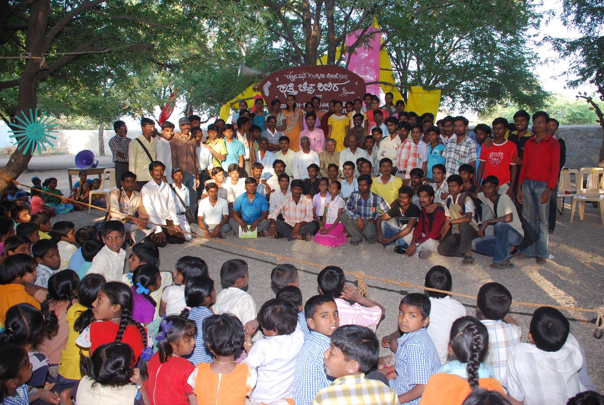
ಭಿತ್ತಿ ಚಿತ್ರ ಶಿಬಿರ Bhitti Chitra Shibira · the mural camp
On the last day of 2008, a wall in Neeralagi was painted with the name of the camp and the date, and the work began. For the next two days artists filled the mud walls of the village with lime and colour — doorways, plinths, window surrounds, the blank stretches between houses.
More than a hundred and twenty old walls were painted. The motifs were the region's own: bird borders, cobras, sun discs, rows of figures holding hands. The village fed the artists for free, house by house, carrying out rotis and rice to wherever they were working.
Writing in Taranga, Ka. Ven. Sri noted that at the camp there was no distinction of caste, creed or sect — villagers simply joined in. A year earlier, he wrote, most people did not know a village called Neeralagi existed.
Neeralagi, eighteen kilometres from Gadag, is no longer just Neeralagi. It is now the Neeralagi of painted houses.
Sudha, 29 January 2009- Place
- Neeralagi, Gadag taluk
- Dates
- 31 Dec 2008 – 1 Jan 2009
- Walls painted
- More than 120
- Opened at
- The Harate Katte, the village gathering platform
- Organised by
- Bannada Mane Samskrutika Vedike (R), Gadag
- Reported in
- Sudha, 29 Jan 2009
Taranga, 16 Apr 2009
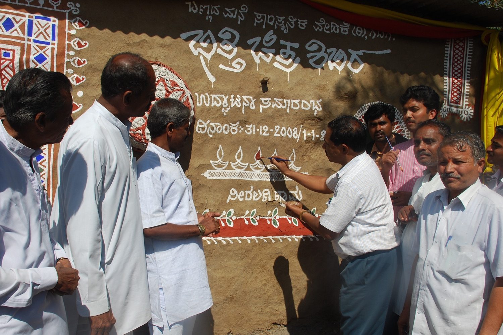
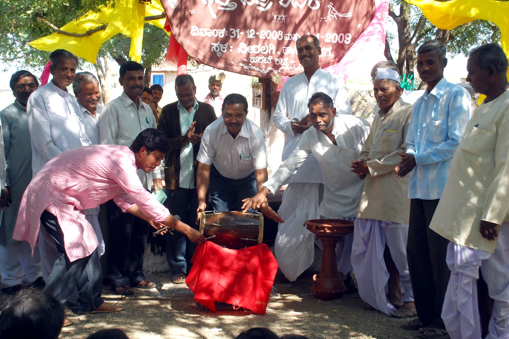
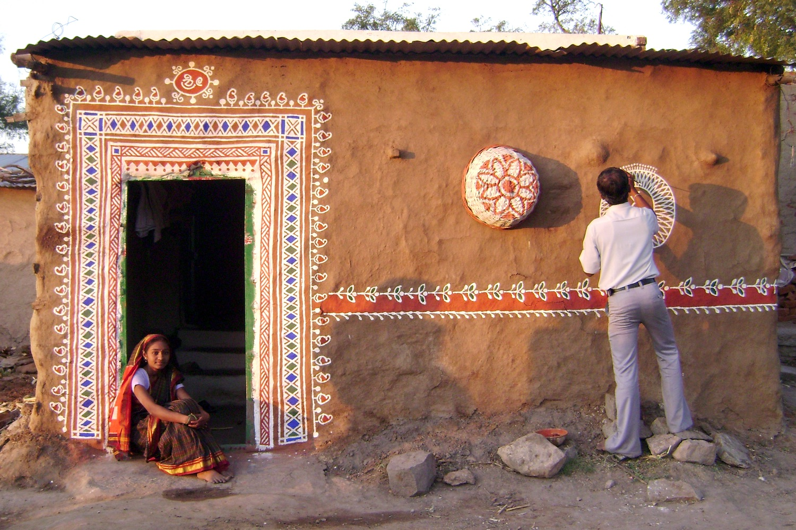
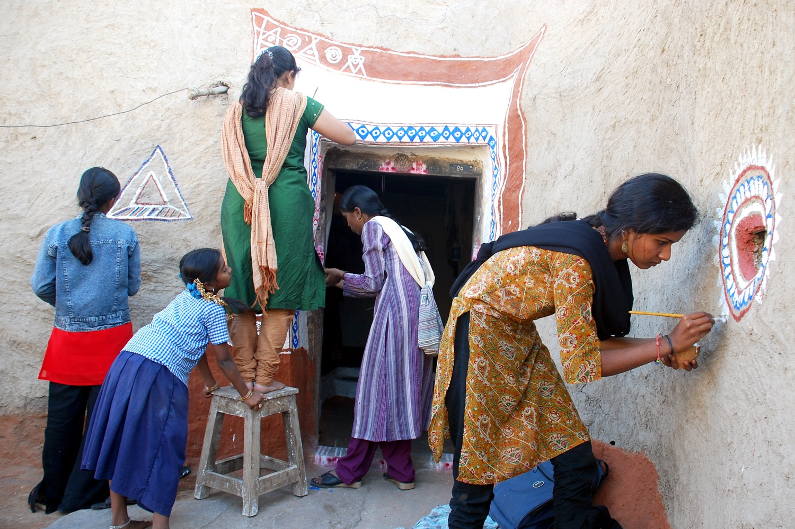
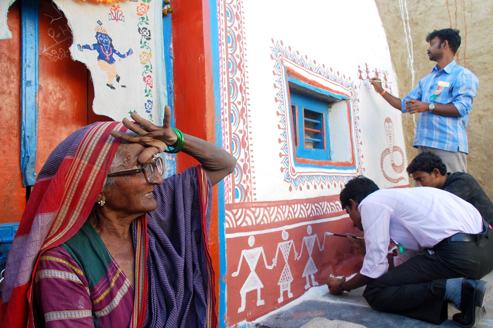
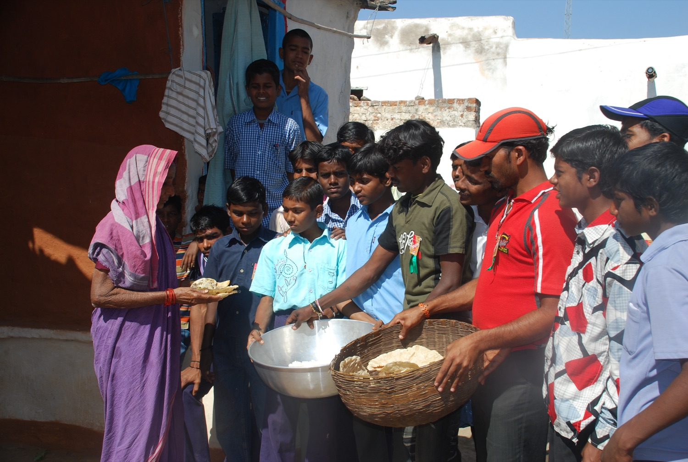
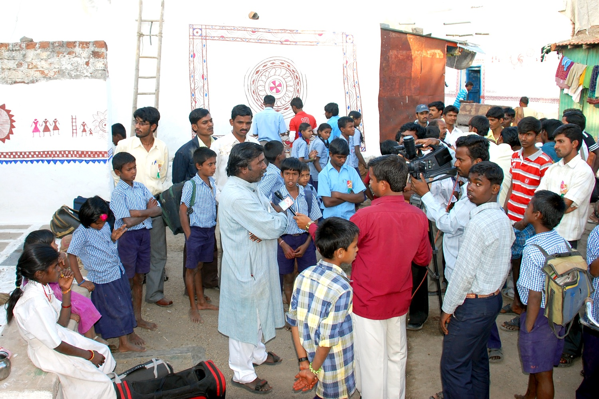
ಚಿತ್ತಾರದ ಚಕ್ಕಡಿ Chittarada Chakkadi · the painted carts
A year later the village did it again, and chose an unlikelier surface. Tractors had made the bullock cart look shabby and old-fashioned; carts sat unused at the edges of yards. So the carts were painted — wheels, shafts, side rails, spoke by spoke.
Fifty carts were painted across 30 and 31 December 2009, and more than seventy in all, by around two hundred artists including students of the J.S. Art School and Jaya Kala Mandira. Farmers painted their bullocks' horns to match.
On New Year's Day the carts went out together in procession along the village road. The idea began with Vijaya Kiresoor, the drawing teacher at Neeralagi's government high school, and was directed by the artists S. Gunjal and Sangamesh Harlapur.
They dressed in folk painting the carts that had fallen into neglect, and gave them a new dimension.
Taranga, 18 March 2010- Place
- Neeralagi, Gadag taluk
- Painted on
- 30 – 31 Dec 2009
- Procession
- 1 January 2010
- Carts
- 50 over two days, 70+ in all
- Artists
- About 200, with J.S. Art School
- Reported in
- Sudha, 18 Feb 2010
Taranga, 18 Mar 2010
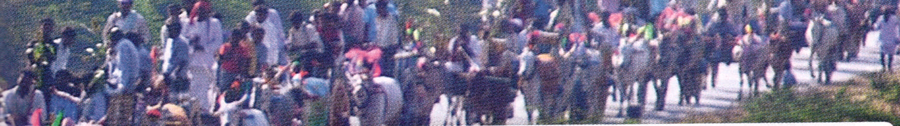
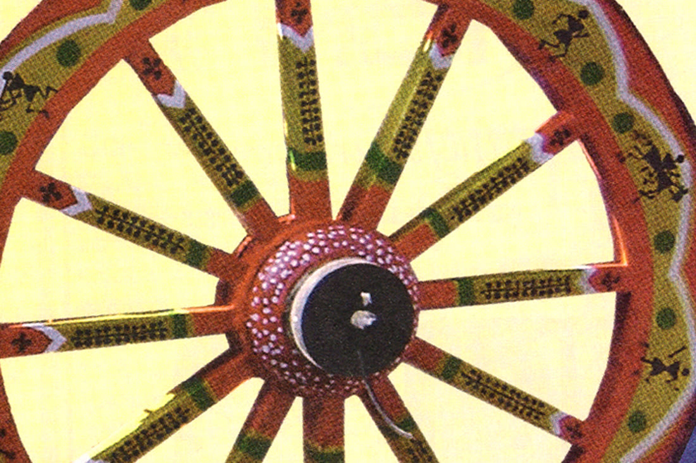
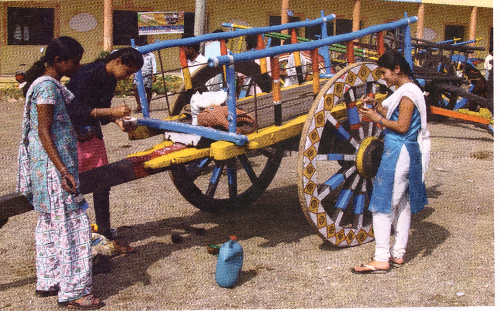
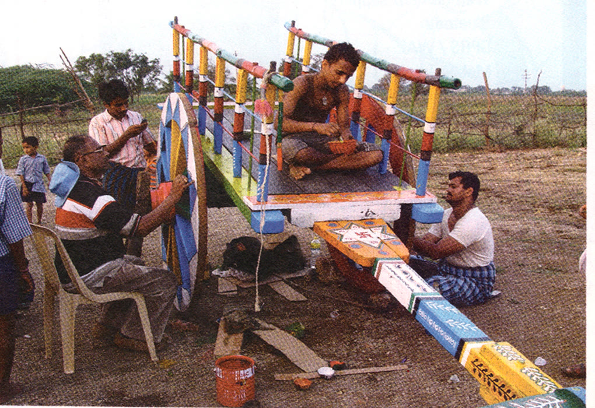
photographs of the carts are details from the magazine features
Four features, two magazines
Sudha and Taranga both covered each programme. Tap a clipping to read the original page.
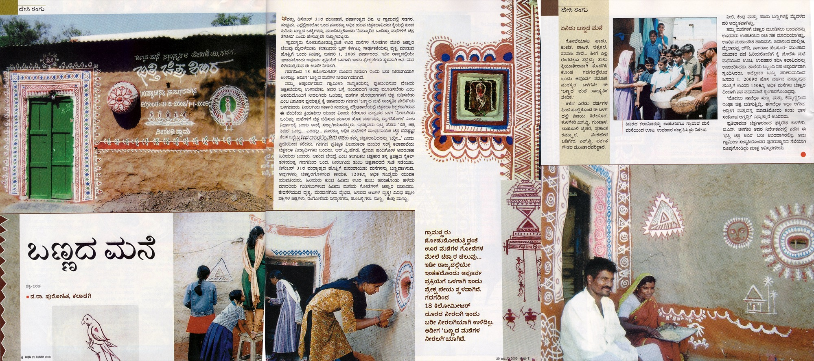
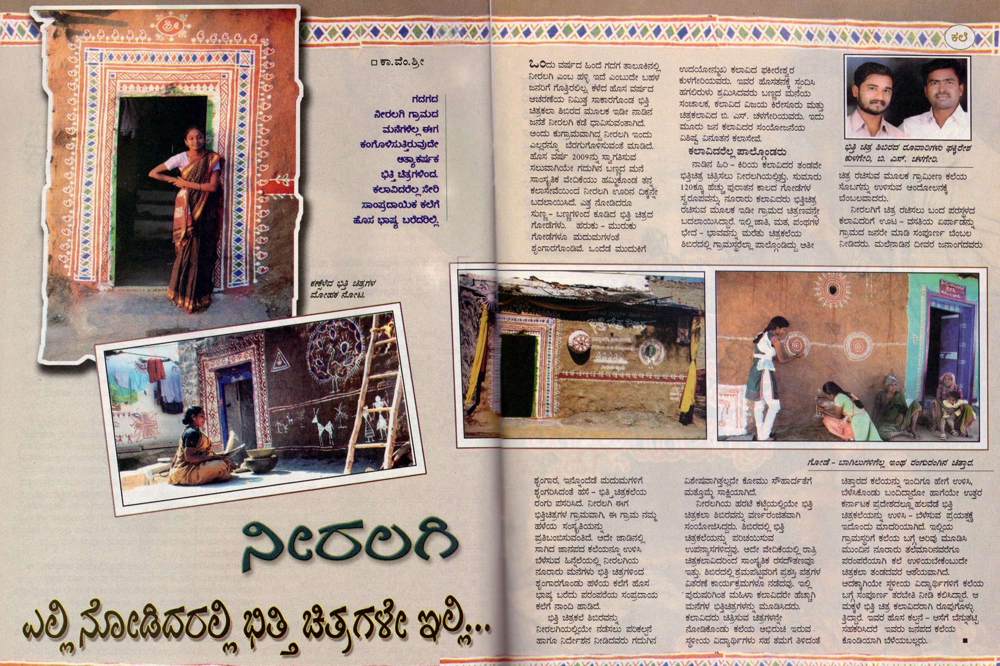
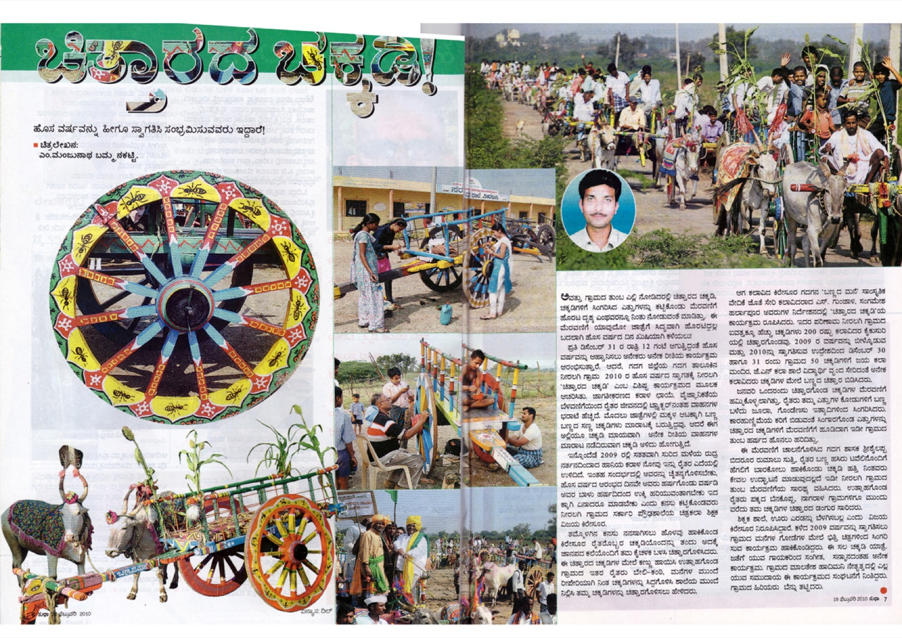
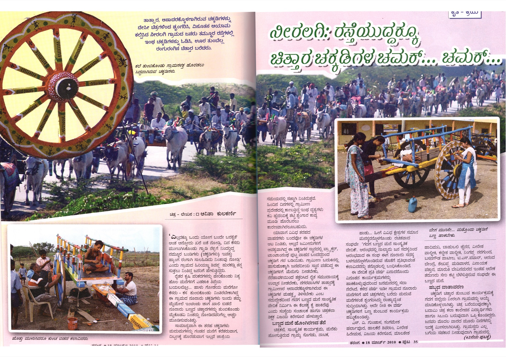
English here is translated from the Kannada originals
The same brushes now go to schoolchildren across Karnataka.
Enter Chinnara Chitra Chittara